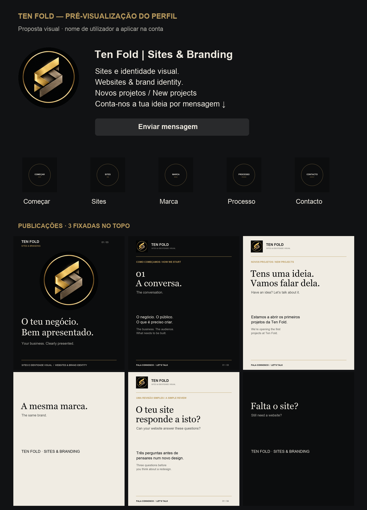

TEN FOLD · PRIMEIROS CONTACTOS E PROJETOSO perfil começa
com a tua marca.
A imagem de perfil é uma cópia exata da que enviaste. Esta é uma pré-visualização e um conjunto de ficheiros para a conta; não foi criada nem alterada uma conta no Instagram. O @ real aplica-se na própria conta.

Como publicar: seguir as pastas 01 → 06. Em cada uma, carregar os ficheiros indicados e copiar a legenda. Nos carrosséis, respeitar 01.png → 02.png → 03.png. Fixar 01, 05 e 04 no topo. As legendas já incluem português e inglês. Os Reels são tipográficos e sem áudio; estão exportados em MP4, prontos a carregar.
01 · Carrossel · 3 imagensO que a Ten Fold faz
Escolher as imagens pela ordem dos números.
02 · Reel · 12 segundosAinda não tens site?
Carregar o MP4 como Reel e escolher CAPA.png como capa.
03 · Carrossel · 4 imagensO teu site responde a isto?
Escolher as imagens pela ordem dos números.
04 · Post · 1 imagemConvite para os primeiros contactos
Carregar POST.png.
05 · Carrossel · 3 imagensComo começa um projeto
Escolher as imagens pela ordem dos números.
06 · Reel · 12 segundosA mesma marca em todo o lado
Carregar o MP4 como Reel e escolher CAPA.png como capa.
07 · Stories e destaques
Cada pasta tem uma STORY.png pronta a publicar e uma CAPA-DO-DESTAQUE.png. Publicar a história, guardá-la no destaque do mesmo nome e escolher a respetiva capa.
Uma tarefa importante no site: o material antigo contém afirmações como «Companies we have worked with» com marcas conhecidas e «No mock-ups», além de «10x». Como disseste que ainda estão a procurar os primeiros clientes, convém rever essas afirmações antes de enviar potenciais clientes para lá. Este conjunto não as repete nem apresenta projetos conceptuais como resultados comerciais.
12 de novembro de 2026 · Símbolo fornecido pelo Marco · Composição tipográfica, sem novas fotografias geradas por IA · Exportações verificadas.